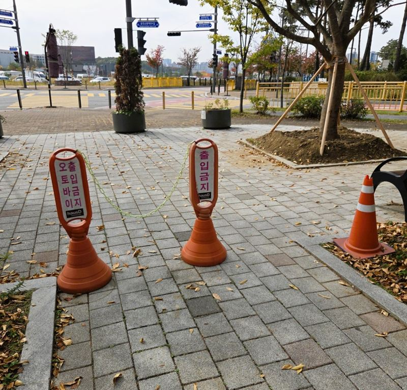
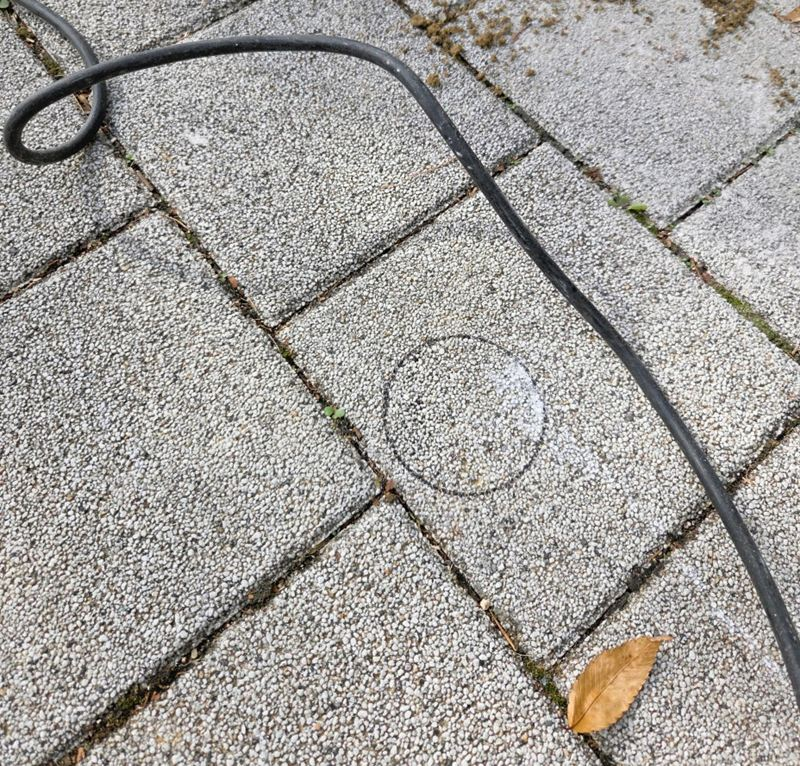
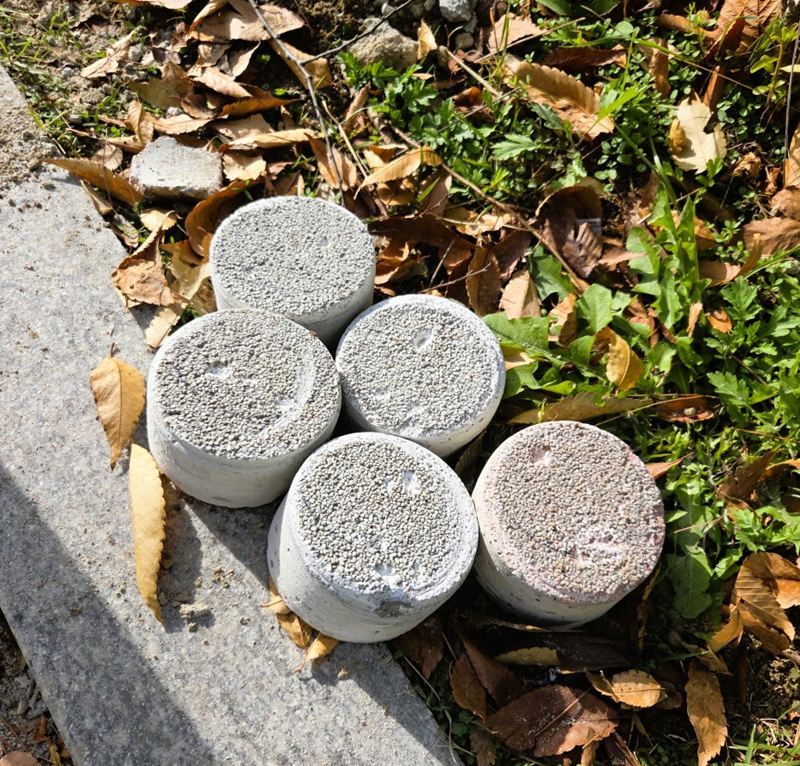
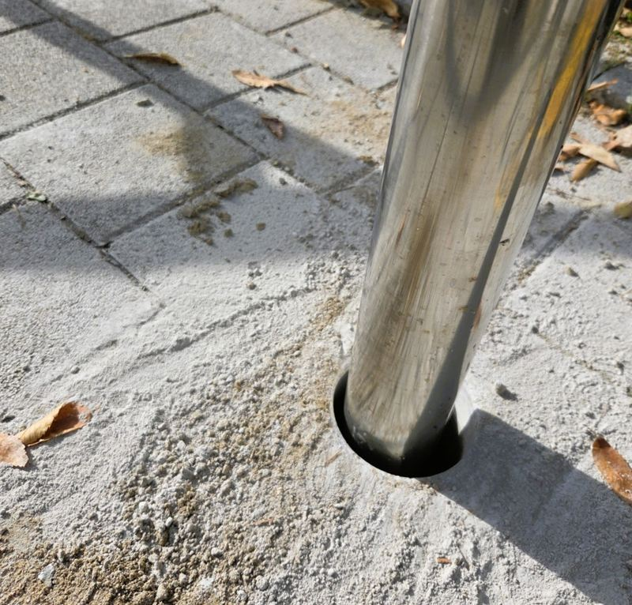
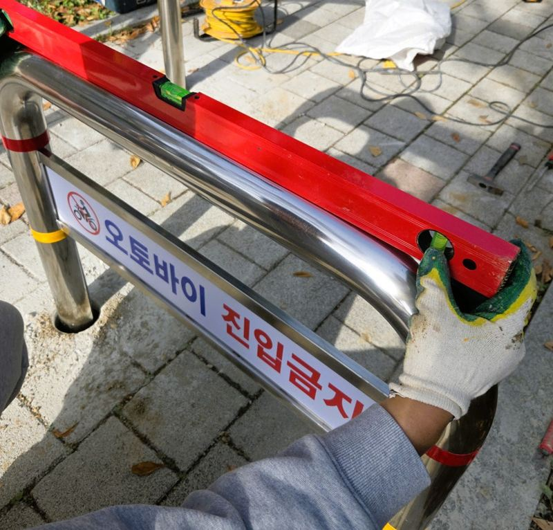

동탄 오토바이 진입금지 매립 볼라드 설치 기준
동탄의 한 아파트 단지에서 "보행로로 오토바이가 들어오지 못하게 해 달라"는 요청을 받았어요. 막는 것만 생각하면 간단하지만, 그 길로 유모차와 휠체어, 자전거도 지나다녀요. 그래서 무엇을 막을지보다 어디를 남겨 둘지를 먼저 정했어요.
← 밀어서 전후 비교 →
라바콘으로 임시로 막아 두던 입구
설치 전에는 보행로 입구에 라바콘과 안내판을 세워 두고 있었어요. 가벼운 임시 시설이라 쉽게 밀리고, 비가 오거나 바람이 불면 쓰러지기도 해요. 관리사무소에서는 바닥에 단단히 박혀 흔들리지 않는 구조물을 원하셨어요.

자리를 정하기 전에 걸어 본 동선
볼라드는 한 번 묻으면 옮기기 어려워서, 위치를 정하는 데 시간을 가장 많이 썼어요. 직접 보행로를 오가며 세 가지를 봤어요.
- 오토바이가 들어오던 방향배달 오토바이가 주로 어느 쪽 차도에서 꺾어 들어오는지 확인했어요.
- 사람이 몰리는 폭등하원 시간에 유모차와 아이들이 한꺼번에 지나가는 구간은 넓게 남겼어요.
- 바닥 아래 사정보도블록 아래에 배관이나 맨홀이 지나가는 자리는 피해서 표시했어요.
U자형과 라운드형, 왜 같이 썼을까
| U자형 볼라드 | 라운드형 볼라드 | |
|---|---|---|
| 생김새 | 기둥 두 개가 위에서 이어진 형태 | 둥글게 휘어진 기둥 형태 |
| 쓰임 | 넓은 폭을 한 번에 좁히고 안내 문구를 달기 좋음 | 통로 가장자리를 부드럽게 막고 사람 동선을 유도 |
| 이 현장에서 | 입구 가운데 진입 폭을 줄이는 용도 | 양옆 빈틈으로 돌아 들어오는 것을 막는 용도 |
두 가지를 섞으면 오토바이가 지나갈 만한 틈은 줄이고, 걸어서 지나가는 길은 남길 수 있어요. 실제 간격은 현장 폭과 다니는 사람을 보고 정해요.
보도블록을 뚫고 기둥을 묻기까지
정해 둔 자리에 전용 장비로 보도블록을 원형으로 뚫고, 기둥이 들어갈 만큼 아래를 파냈어요. 잘라 낸 블록 조각을 보면 바닥 아래 상태도 함께 확인할 수 있어요.


기둥을 넣은 뒤에는 바로 시멘트를 채우지 않았어요. 수평계를 대고 기울기와 간격을 먼저 맞췄어요. 기운 채로 굳으면 나중에 바로잡기 어려워서, 고정 전에 자세를 맞추는 게 가장 중요해요.


시멘트로 매립부를 채운 다음 주변 블록과 작업 잔재를 정리하고, 사람이 지나갈 통로가 너무 좁아지지 않았는지 한 번 더 걸어 보며 확인했어요.
관리사무소에서 미리 챙기면 좋은 것
- 입주민 안내바닥을 뚫는 작업이라 소음이 나요. 작업일과 위치를 미리 공지해 두면 민원이 줄어요.
- 굳는 동안 보호시멘트가 충분히 굳기 전에 부딪히면 기울 수 있어요. 며칠은 라바콘으로 주변을 둘러 두세요.
- 통행 기준 확인휠체어·유모차가 지나갈 폭이 남는지, 단지 내 관련 규정에 맞는지는 관리 주체가 함께 검토해 주세요.
- 문구 스티커U자형에 "오토바이 진입금지" 같은 안내 문구를 붙이면 효과가 더 좋아요.
아파트 볼라드 설치, 자주 받는 질문
보행로에 오토바이가 계속 들어오는데 어떻게 막나요?
입구 폭을 좁히는 볼라드가 가장 많이 쓰여요. 다만 구조물만으로 진입을 완전히 막는다고 보장하기는 어려워서, 안내 문구나 관리 방법을 함께 쓰는 게 좋아요.
볼라드 사이 간격은 얼마로 하나요?
정해진 숫자 하나로 정하지 않고 현장 통로 폭과 다니는 사람을 보고 정해요. 휠체어와 유모차가 지나갈 공간을 먼저 확보해요.
매립식과 이동식은 뭐가 다른가요?
매립식은 바닥에 묻어 흔들림이 적고, 이동식은 필요할 때 빼낼 수 있어요. 차량이 가끔 드나들어야 하는 곳이면 이동식이나 브라켓형을 같이 검토해요.
보도블록이 깨지거나 티가 많이 나지 않나요?
원형으로 필요한 만큼만 뚫어서 주변 블록은 그대로 둬요. 작업 후 잔재와 주변 정리까지 하고 마무리해요.
설치 후 바로 써도 되나요?
매립한 시멘트가 굳는 시간이 필요해요. 날씨와 재료에 따라 달라서 작업이 끝날 때 함께 안내드려요.
다른 지역 볼라드 현장
- 관악 오토바이 진입금지 구조물 설치 방법
- 평택 매립 볼라드 파손 시 철거·재시공 방법
- 시흥 아파트 보도블럭 타공 후 볼라드 앙카 설치
- 용산 스텐 U자 볼라드 한두 개 설치 작업
- 부천 볼라드 설치 비용과 종류 · 블로그
- 분당 도로 규제봉 앙카볼트 교체 방법 · 블로그
- 군포 주차 카스토퍼 설치 비용과 주의사항 · 블로그
- 평택 보도블럭 볼라드 매립 깊이와 시공 방법 · 블로그
- 평택 아파트 차선 규제봉 파손 교체 방법 · 블로그
- 평택 이동형 브라켓 매립식 볼라드 설치 비용 · 블로그
- 평택 일자형 볼라드 고리 연결로 출입 막는 방법 · 블로그
- 양천 주차 진입금지 U자 볼라드 설치 목적과 방법 · 블로그
- 양평 도로 안전봉 설치·교체 작업 방법 · 블로그
막고 싶은 입구 전체 사진과 원하는 위치를 알려주시면 상담해 드려요.
전화 상담 010-4517-9872